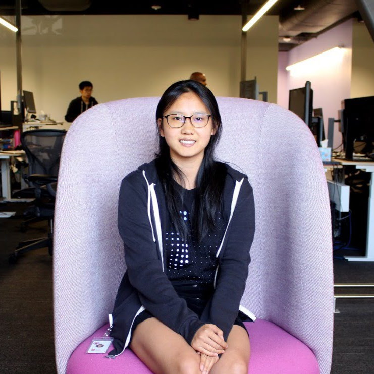

About
Publications
News
News
14/05/2021: Awarded Finalist for the Governor General's Gold Medal (only 4 awarded in the Master's level)
11/12/2020:
Poster presentation
at NeurIPS 2020 Machine Learning for Autonomous Driving
11/11/2020: Paper published in
Nature Scientific Reports
23/10/2020: Published a blog post about my Masters experience on
Medium
21/10/2020: UWaterloo published a
story
on my research during Masters
16/09/2020: Awarded Finalist for the Alumni Gold Medal (only 4 awarded in the Master's level)
06/07/2020: Started full-time at Lyft Level 5 on the Perception team as a ML/Software Engineer working on autonomous vehicles
02/09/2020: Submitted Masters
thesis
14/06/2020:
Poster presentation
at CVPR 2020 Women in Computer Vision Workshop
23/03/2020: COVID-Net project reported by
MIT Technology Review
22/03/2020: Release of
COVID-Net and COVIDx
to help stop the spread of COVID-19!
10/03/2020: Paper published in
Sensors: Biomedical Imaging and Sensing
03/03/2020: Panelist for
Artificial Intelligence, Ethics and Healthcare: The Need for Diverse Perspectives
09/12/2019:
Poster presentation
at NeurIPS 2019 Women in Machine Learning Workshop
05/11/2019: Featured in
Behind the Scenes: Interning at Level 5
17/06/2019:
Oral and poster presentation
at CVPR 2019 Fairness, Accountability, Transparency and Ethics in Computer Vision Workshop
16/06/2019:
Poster presentation
at CVPR 2019 Women in Computer Vision Workshop
Copyright © 2018